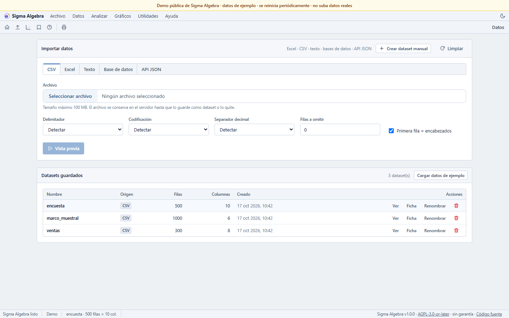
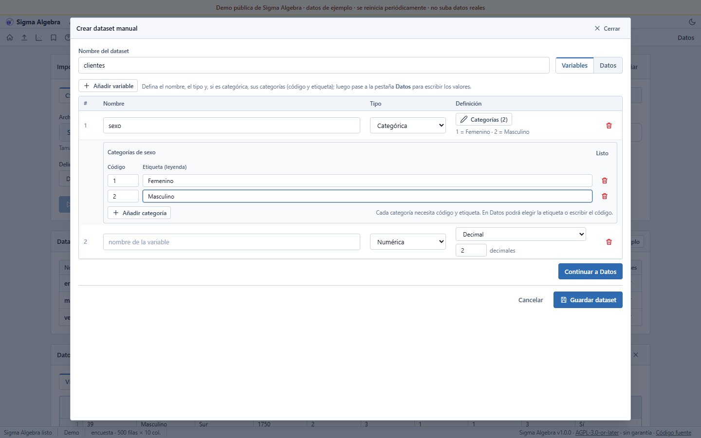
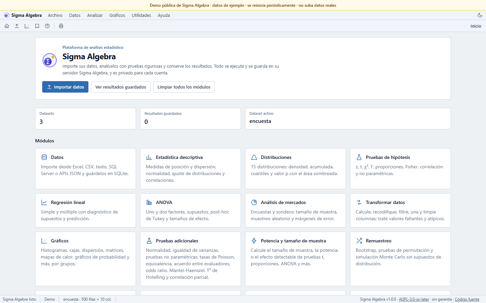

Import anything practical
CSV, Excel, text, SQL Server, MySQL/MariaDB, PostgreSQL, Oracle, MongoDB and JSON APIs. Preview, edit column types and define categorical variables with code + label.
Self-hosted · AGPL-3.0-or-later · Multi-user
A statistics and reporting web app you run on your own server. Import CSV, Excel, text, databases or JSON APIs; run tests and models; build charts; export PDF, Word and Excel reports.
“SAAS” is part of the product name; Sigma Algebra is self-hosted software, not a hosted service.
What it does
One data model, one result history and one place for teaching, surveys, quality and research.
CSV, Excel, text, SQL Server, MySQL/MariaDB, PostgreSQL, Oracle, MongoDB and JSON APIs. Preview, edit column types and define categorical variables with code + label.
Descriptive statistics, 16 hypothesis tests, regression, ANOVA, count/logistic/ordinal/survival models, SEM, multivariate and ML modules.
Sample size and probabilistic sampling, margins of error, cross-tabs and Likert scales; control charts, capability, Gage R&R and DOE.
Histograms, box/violin, Q-Q, scatter/bubble, correlation matrices, contours, 3D, lines, bars, Pareto and confidence intervals.
Save results and notes; export PDF, Word and Excel; print-ready views and reusable report templates.
Each account sees only its datasets, results and notebooks. No telemetry. Optional AI interpretation is per user and per click.
Screenshots



Deploy
SQLite by default; SQL Server, MySQL/MariaDB, PostgreSQL, Oracle and MongoDB are supported.
git clone https://github.com/saffron777/sigma-algebra-analisys-statistics-software-saas.git
cd sigma-algebra-analisys-statistics-software-saas
docker compose up --build -ddocker run -d --name sigma \
-p 127.0.0.1:5000:5000 \
-v sigma_data:/app/instance \
ghcr.io/saffron777/sigma-algebra-analisys-statistics-software-saas:latestOpen http://127.0.0.1:5000. For production, use HTTPS and a reverse proxy; see the deployment guide.
Privacy and license
No analytics, no update checks and no third-party requests from the app. The only optional outbound feature is AI interpretation.
Free software with source available. If you run a modified version as a network service, you must offer its corresponding source to users.
Local accounts, per-user isolation, CSRF protection and secure cookies behind HTTPS.
En español
Sigma Algebra es una plataforma web de análisis estadístico autoalojada y libre (AGPL-3.0-or-later): importa CSV, Excel, bases de datos o APIs; ejecuta pruebas, modelos y encuestas; genera gráficos e informes PDF/Word/Excel. Cada cuenta ve solo sus datos. Se instala con Docker, no tiene telemetría y la IA es opcional.